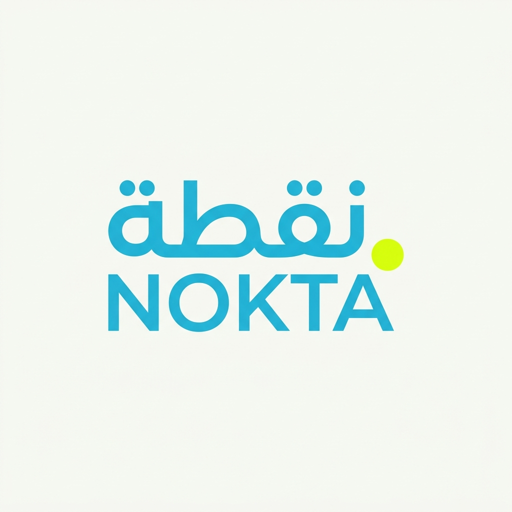
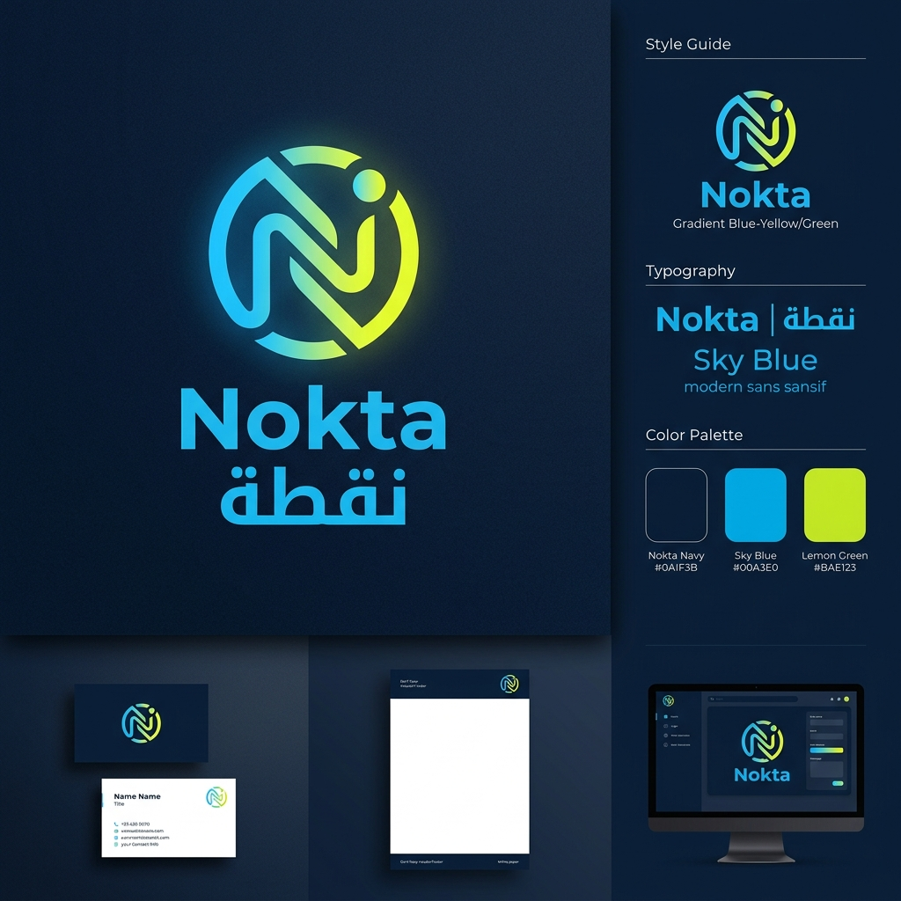
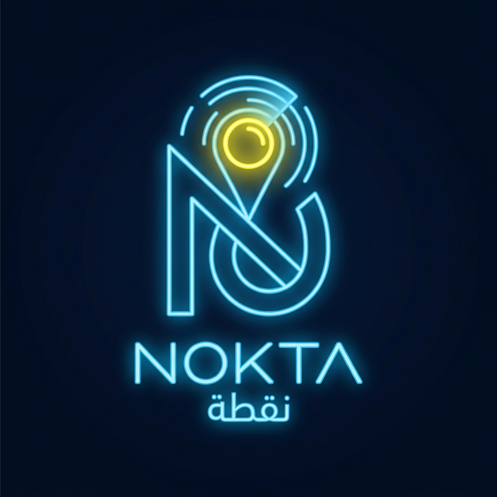
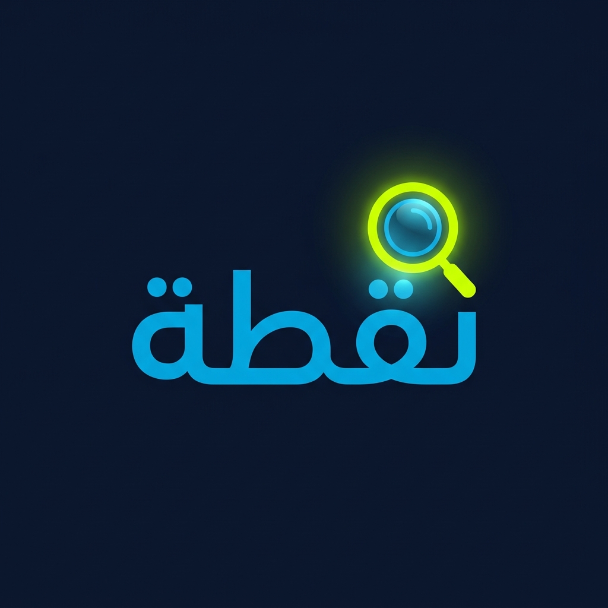
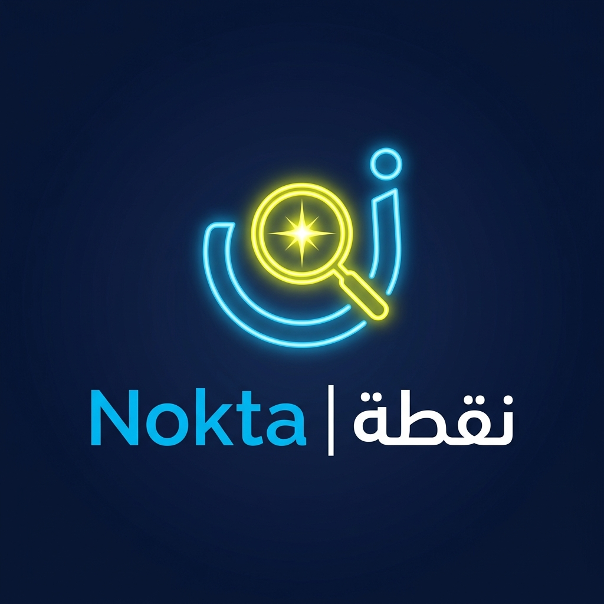
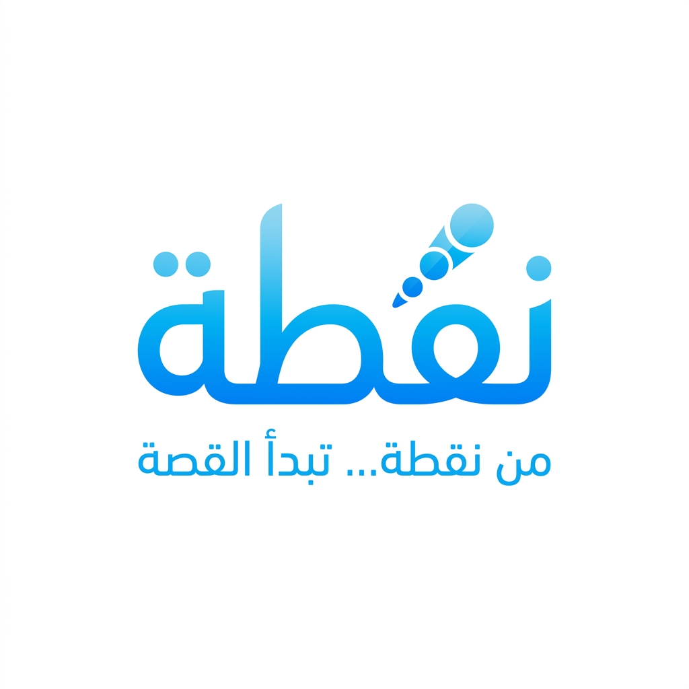
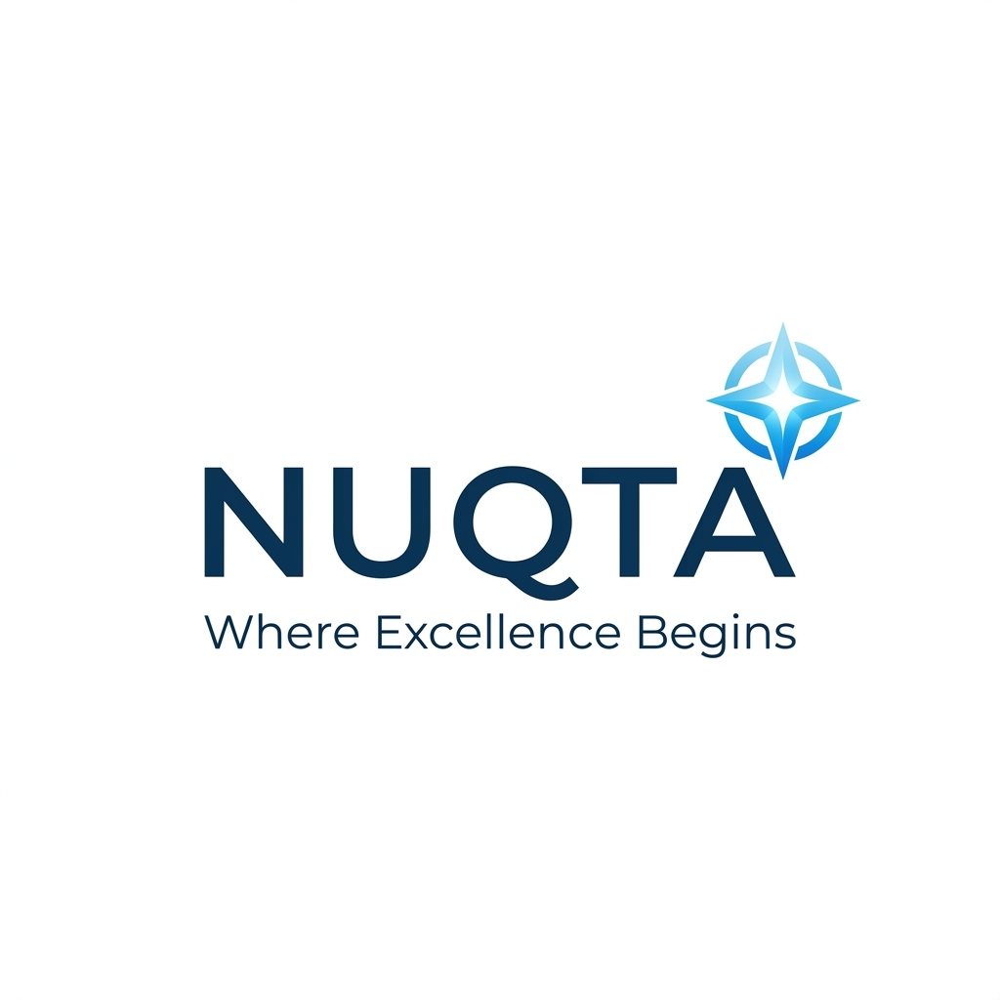
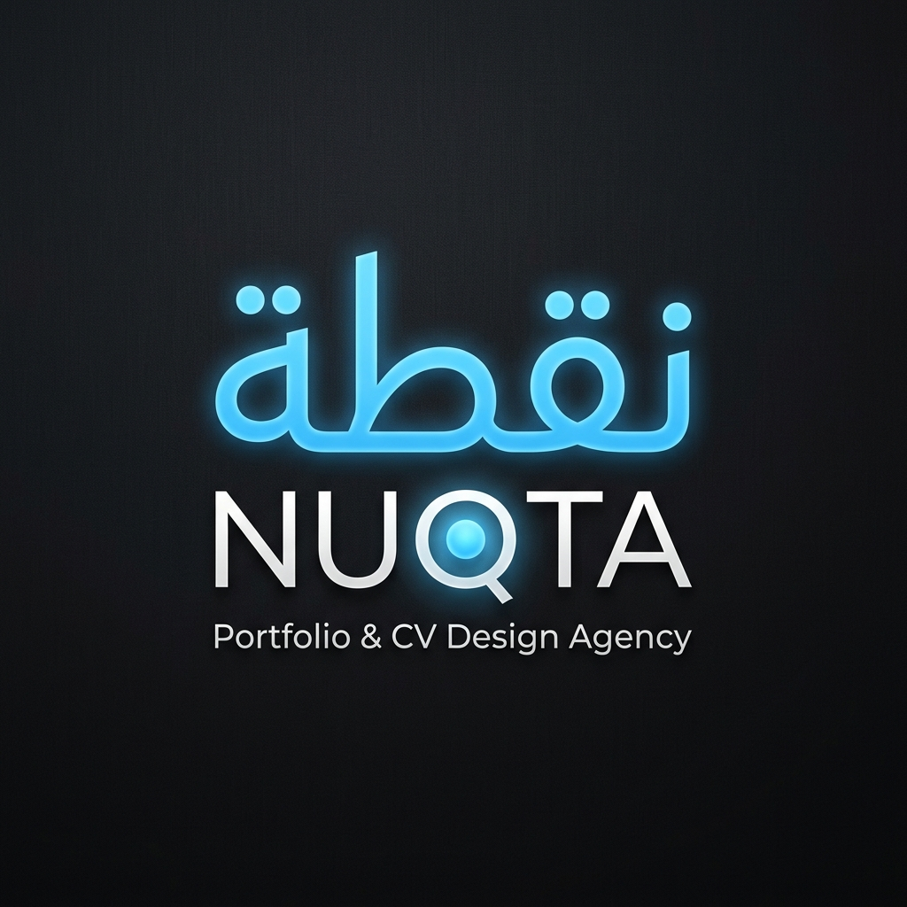
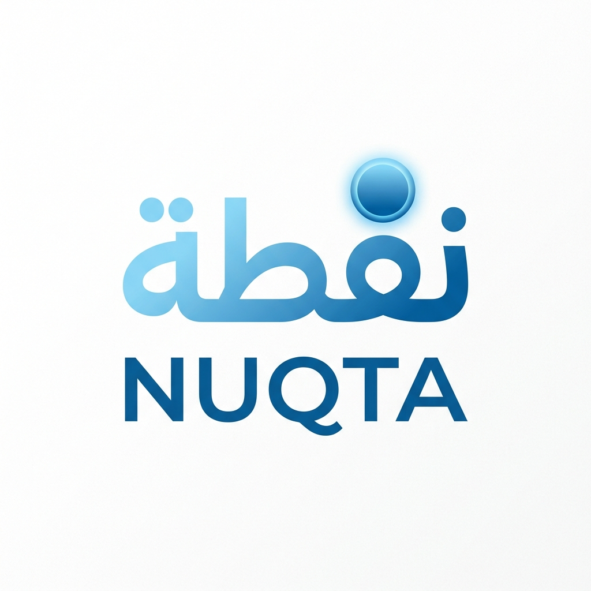

مشروع نقطة (NOQTA) — محمود & روح محمود 🌸✨
دليل عملي ومنظم يساعدنا في المقارنة واختيار الشعار الأنسب لمشروعنا، ومتابعة خطوات التأسيس من إنشاء الحسابات حتى نشر البوستات الأولى.
🎨 اختاروا الشعار الأفضل للمشروع
تصفحا كافة خيارات اللوغو المتاحة واضغطا على أزرار التصويت لحفظ اختيار محمود واختيار روح محمود:

1. الشعار الطباعي المبسط (Minimalist Typography)
خط عربي حديث وواضح مع اسم إنجليزي ونقطة ليمونية مشعة.

2. نظام الهوية الأيقونية الدائرية (Iconic Monogram)
دمج حرف N الإنجليزي مع حرف ن العربي بطريقة هندسية عصرية.

3. شعار نقطة التركيز (Focus Pin Concept)
أيقونة ترمز إلى تحديد الهدف والانطلاق نحو فرص العمل والوصول.

4. شعار النقطة وعدسة الاكتشاف (Search Dot)
رمز العدسة مع النقطة ليعبر عن اكتشاف الشركات للعميل فوراً.

5. شعار الشرارة والتميز (Shining Sparkle)
نقطة مشعة تعبر عن تحويل المهارات والخبرات لنقطة قوة جذابة.

6. الشعار العربي الصافي (Arabic Calligraphy)
خط عربي ذكي وسماوي يناسب العناوين الرسمية للموقع والفييد.

7. الشعار الإنجليزي العصري (English Branding)
تخطيط إنجليزي بنقطة مضيئة يناسب استهداف الفريلانسرز والعملاء الدوليين.

8. الشعار الفاخر الداكن (Dark Navy Premium)
نموذج مخصص للتطبيقات والخلفيات الفاخرة المتباينة مع الأزرق السماوي.

9. الشعار المتكامل الرسمي (Main Branding System)
النسخة الرسمية الكاملة المتضمنة عبارة: "من نقطة... تبدأ القصة".
🚀 مخطط الخط الزمني لتأسيس مشروعنا (Timeline Launch Roadmap)
خطة مرتبة زمنياً من البداية لخطوات العمل مع إمكانية تعليم الخطوات المكتملة:
📱 المرحلة الأولى: إنشاء الحسابات والربط المباشر
تأسيس البنية التحتية الرقمية لمشروع نقطة:
📌 المرحلة الثانية: تهيئة البروفايل والبايو والهايلايتس
ترتيب الحساب ليمنح انطباعاً احترافياً وثقة فورية:
💻 المرحلة الثالثة: إعداد المعرض ونماذج الـ CVs والمواقع
بناء النماذج الجاهزة التي سنعرضها للعملاء في الستوري والبوستات:
📣 المرحلة الرابعة: إطلاق المحتوى والمنشورات الجاهزة
البدء بالخطة التسويقية وتوليد الرسائل والمتابعين:
💬 المرحلة الخامسة: استقبال الرسائل وتحويلها لطلبات مدفوعة
إدارة طلبات العملاء وتسليم الملفات بأسلوب راقٍ وسريع:
📝 بنك المحتوى والمنشورات الجاهزة الكامل
مكتبة المنشورات والسكريبتات الجاهزة للنشر فوراً، يمكنكما اختيار التصنيف والنسخ بضغطة زر:
📱 خطة السوشيال ميديا والباقات المقترحة
ملخص الخدمات التي سيقدمها مشروع نقطة بأسعار مرنة ومناسبة في سوريا:
📄 1. سيرة ذاتية حديثة (CV)
تنسيق احترافي، متوافق مع ATS، يفتح بسهولة على الموبايل والكمبيوتر بصيغة PDF.
💼 2. موقع بورتفوليو تفاعلي
رابط موقع شخصي سريع يفتح بدون بطء يعرض الأعمال والمشاريع وربط مباشر بالواتساب.
🏢 3. بروفايل شركة (Company Profile)
صفحة تعريفية عصرية وموحدة للشركات والمشاريع الصغيرة والمؤسسات الناشئة.
📅 جدول النشر الأسبوعي